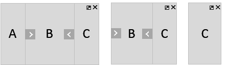
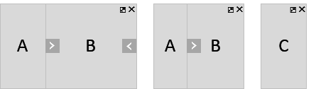

Types of Layout
Overview of the possible layouts for an sap.f.FlexibleColumnLayout, as defined in the sap.f.LayoutType enumeration.
Although the FlexibleColumnLayout can display 2 or 3 pages at one time, they can never have equal width (50%/50% or 33%/33%/33%). One of the pages is always larger (expanded) or even takes up the full width of the control (fullscreen). This is intentional because users should have a clear indication of what to focus their attention on at any given moment, for example, a list of items, one particular item, one item’s details.
Transitioning from a one-column layout to any two-column layout, and then to any three-column layout is seen by the user as new columns appearing/disappearing on desktop/tablet or the next column replacing the previous one - on phone (small screen size). The app does not need to provide separate logic for the different screen sizes, but only change the layout based on the user input and desired behavior. The FlexibleColumnLayout will internally manage column visibility and resizing. If at any time, the browser size changes, this will be reflected by the control automatically.
There are 9 allowed variations of width and visibility for the 3 columns. They are represented with the values of the layout property, which is of type sap.f.LayoutType.
The table below shows how each of the 9 layout types affects the column visibility and width, based on the control size:
|
Layout Types |
Desktop / Tablet / Phone |
|---|---|
|
OneColumn This is the default layout type for a FlexibleColumnLayout. Only the Begin column is displayed, no matter the control size. Use to show the first logical information level (master page) only. |

|
|
TwoColumnsBeginExpanded Use this layout type to display two logical levels of information (master and detail pages, master being expanded) on desktop/tablet, or the second logical level of information only (detail page) on phone. On desktop/tablet the transition from OneColumn to TwoColumnsBeginExpanded is seen by the user as the Begin column shrinking and Mid column opening, while on phone it's seen as the Mid column replacing the Begin column. |

|
|
TwoColumnsMidExpanded Similar to TwoColumnsBeginExpanded, but this time the Mid column is the wider one. |

|
|
MidColumnFullScreen Use this layout to display the second logical level of information (detail page) only. The Mid column takes up the whole available control width for all control sizes. Note On small screen sizes, the layouts
TwoColumnsBeginExpanded,
TwoColumnsMidExpanded and
MidColumnFullScreen all lead to the same result
for the user – the Mid column taking up the whole
control width. However, if the user resizes the browser and makes
space, the control will automatically apply the rules of the current
layout for the new width.
|

|
|
ThreeColumnsMidExpanded Use this layout to display up to three logical levels of information side by side (master, detail, and detail-detail pages), when the user should focus primarily on the content of the Mid column (as it is wider than the other two). On desktop, all three columns will be displayed, on tablet – the Mid and End columns only (with a layout arrow to access the Begin column), and on phone – the End column only. |

|
|
ThreeColumnsEndExpanded Similar to ThreeColumnsMidExpanded, but this time the End column is expanded, and this is where the user is supposed to focus their attention. |

|
|
ThreeColumnsMidExpandedEndHidden Use this layout to show the Begin and Mid columns only (Mid being expanded), while the End column is hidden but accessible with a layout arrow. The difference between this layout and the TwoColumnsMidExpanded layout is that for TwoColumnsMidExpanded the user cannot access the End column at all, as only two logical levels of information are offered (the third may not be loaded yet), while for ThreeColumnsMidExpandedEndHidden the End column is not empty, but just not currently displayed. Its content is loaded and easily accessible (most commonly already seen by the user, and now hidden so more space can be freed for the other columns). |

|
|
ThreeColumnsBeginExpandedEndHidden Similar to ThreeColumnsMidExpandedEndHidden, but this time the Begin column is expanded. A layout arrow is provided to shrink the Begin column, thus transitioning the layout to ThreeColumnsMidExpandedEndHidden. |

|
|
EndColumnFullScreen Use this layout to display the third logical level of information (detail-detail page) only. The End column takes up the whole available control width for all screen sizes. Note On small screen sizes all three-column layouts and
EndColumnFullScreen lead to the same result for
the user – the End column taking up the whole
control width. However, if the user resizes the browser and makes
space, the control will automatically apply the rules of the current
layout for the new width.
|

|
For each value of the layout property, the FlexibleColumnLayout displays a different combination of columns, based on the available control width (or screen width, if the control takes up the whole screen).
|
Control size |
Columns |
|---|---|
|
Up to 960px (Phone) |
1 column max |
|
960px – 1280px (Tablet) |
2 column max |
|
1280px and above (Desktop) |
3 column max |